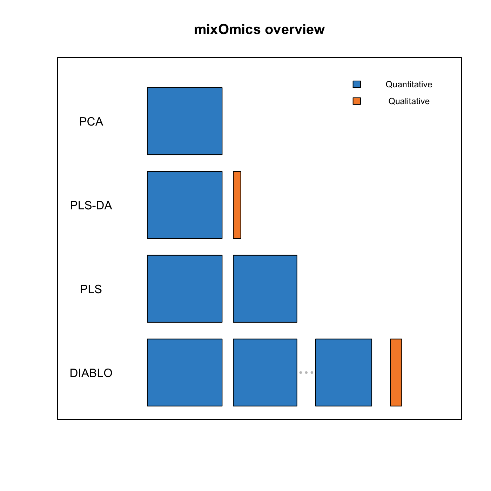

Chapter 1 Introduction
mixOmics is an R toolkit dedicated to the exploration and integration of biological data sets with a specific focus on variable selection. The package currently includes nineteen multivariate methodologies, mostly developed by the mixOmics team (see some of our references in 1.2.3). Originally, all methods were designed for omics data, however, their application is not limited to biological data only. Other applications where integration is required can be considered, but mostly for the case where the predictor variables are continuous (see also 1.1).
In mixOmics, a strong focus is given to graphical representation to better translate and understand the relationships between the different data types and visualize the correlation structure at both sample and variable levels.
1.1 Input data
Note the data pre-processing requirements before analysing data with mixOmics:
Types of data. Different types of biological data can be explored and integrated with
mixOmics. Our methods can handle molecular features measured on a continuous scale (e.g. microarray, mass spectrometry-based proteomics and metabolomics) or sequenced-based count data (RNA-seq, 16S, shotgun metagenomics) that become `continuous’ data after pre-processing and normalisation.Normalisation. The package does not handle normalisation as it is platform-specific and we cover a too wide variety of data! Prior to the analysis, we assume the data sets have been normalised using appropriate normalisation methods and pre-processed when applicable.
Prefiltering. While
mixOmicsmethods can handle large data sets (several tens of thousands of predictors), we recommend pre-filtering the data to less than 10K predictor variables per data set, for example by using Median Absolute Deviation (Teng et al. 2016) for RNA-seq data, by removing consistently low counts in microbiome data sets (Lê Cao et al. 2016) or by removing near-zero variance predictors. Such step aims to lessen the computational time during the parameter tuning process.Data format. Our methods use matrix decomposition techniques. Therefore, the numeric data matrix or data frames have \(n\) observations or samples in rows and \(p\) predictors or variables (e.g. genes, proteins, OTUs) in columns.
Covariates. In the current version of
mixOmics, covariates that may confound the analysis are not included in the methods. We recommend correcting for those covariates beforehand using appropriate univariate or multivariate methods for batch effect removal. Contact us for more details as we are currently working on this aspect.
1.2 Methods
1.2.1 Some background knowledge
We list here the main methodological or theoretical concepts you need to know to be able to efficiently apply mixOmics:
Individuals, observations or samples: the experimental units on which information are collected, e.g. patients, cell lines, cells, faecal samples etc.
Variables, predictors: read-out measured on each sample, e.g. gene (expression), protein or OTU (abundance), weight etc.
Variance: measures the spread of one variable. In our methods, we estimate the variance of components rather that variable read-outs. A high variance indicates that the data points are very spread out from the mean, and from one another (scattered).
Covariance: measures the strength of the relationship between two variables, i.e. whether they co-vary. A high covariance value indicates a strong relationship, e.g. weight and height in individuals frequently vary roughly in the same way; roughly, the heaviest are the tallest. A covariance value has no lower or upper bound.
Correlation: a standardized version of the covariance that is bounded by -1 and 1.
Linear combination: variables are combined by multiplying each of them by a coefficient and adding the results. A linear combination of height and weight could be 2 \(*\) weight - 1.5 \(*\) height with the coefficients 2 and -1.5 assigned with weight and height respectively.
Component: an artificial variable built from a linear combination of the observed variables in a given data set. Variable coefficients are optimally defined based on some statistical criterion. For example in Principal Component Analysis, the coefficients of a (principal) component are defined so as to maximise the variance of the component.
Loadings: variable coefficients used to define a component.
Sample plot: representation of the samples projected in a small space spanned (defined) by the components. Samples coordinates are determined by their components values or scores.
Correlation circle plot: representation of the variables in a space spanned by the components. Each variable coordinate is defined as the correlation between the original variable value and each component. A correlation circle plot enables to visualise the correlation between variables - negative or positive correlation, defined by the cosine angle between the centre of the circle and each variable point) and the contribution of each variable to each component - defined by the absolute value of the coordinate on each component. For this interpretation, data need to be centred and scaled (by default in most of our methods except PCA). For more details on this insightful graphic, see Figure 1 in (González et al. 2012).
Unsupervised analysis: the method does not take into account any known sample groups and the analysis is exploratory. Examples of unsupervised methods covered in this vignette are Principal Component Analysis (PCA, Chapter 3), Projection to Latent Structures (PLS, Chapter 5), and also Canonical Correlation Analysis (CCA, not covered here).
Supervised analysis: the method includes a vector indicating the class membership of each sample. The aim is to discriminate sample groups and perform sample class prediction. Examples of supervised methods covered in this vignette are PLS Discriminant Analysis (PLS-DA, Chapter 4), DIABLO (Chapter 6) and also MINT (not covered here (Rohart, Matigian, et al. 2017)).
1.2.2 Overview
Here is an overview of the most widely used methods in mixOmics that will be further detailed in this vignette, with the exception of rCCA and MINT. We depict them along with the type of data set they can handle.


Figure 1.1: List of methods in mixOmics, sparse indicates methods that perform variable selection
Figure 1.2: Main functions and parameters of each method
1.2.3 Key publications
The methods implemented in mixOmics are described in detail in the following publications. A more extensive list can be found at this link.
Overview and recent integrative methods: Rohart F., Gautier, B, Singh, A, Le Cao, K. A. mixOmics: an R package for ’omics feature selection and multiple data integration. PLoS Comput Biol 13(11): e1005752.
Graphical outputs for integrative methods: (González et al. 2012) Gonzalez I., Le Cao K.-A., Davis, M.D. and Dejean S. (2012) Insightful graphical outputs to explore relationships between two omics data sets. BioData Mining 5:19.
DIABLO: Singh A, Gautier B, Shannon C, Vacher M, Rohart F, Tebbutt S, K-A. Le Cao. DIABLO - multi-omics data integration for biomarker discovery.
sparse PLS: Le Cao K.-A., Martin P.G.P, Robert-Granie C. and Besse, P. (2009) Sparse Canonical Methods for Biological Data Integration: application to a cross-platform study. BMC Bioinformatics, 10:34.
sparse PLS-DA: Le Cao K.-A., Boitard S. and Besse P. (2011) Sparse PLS Discriminant Analysis: biologically relevant feature selection and graphical displays for multiclass problems. BMC Bioinformatics, 22:253.
Multilevel approach for repeated measurements: Liquet B, Le Cao K-A, Hocini H, Thiebaut R (2012). A novel approach for biomarker selection and the integration of repeated measures experiments from two assays. BMC Bioinformatics, 13:325
sPLS-DA for microbiome data: Le Cao K-A\(^*\), Costello ME \(^*\), Lakis VA , Bartolo F, Chua XY, Brazeilles R and Rondeau P. (2016) MixMC: Multivariate insights into Microbial Communities.PLoS ONE 11(8): e0160169
1.3 Outline of this Vignette
- Chapter 2 details some practical aspects to get started
- Chapter 3: Principal Components Analysis (PCA)
- Chapter 4: Projection to Latent Structure - Discriminant Analysis (PLS-DA)
- Chapter 5: Projection to Latent Structures (PLS)
- Chapter 6: Integrative analysis for multiple data sets (DIABLO)
Each methods chapter has the following outline:
- Type of biological question to be answered
- Brief description of an illustrative data set
- Principle of the method
- Quick start of the method with the main functions and arguments
- To go further: customized plots, additional graphical outputs, and tuning parameters
- FAQ
1.4 Other methods not covered in this vignette
Other methods not covered in this document are described on our website and the following references:
regularised Canonical Correlation Analysis, see the Methods and Case study tabs, and (González et al. 2008) that describes CCA for large data sets.
Microbiome (16S, shotgun metagenomics) data analysis, see also (Lê Cao et al. 2016) and kernel integration for microbiome data. The latter is in collaboration with Drs J Mariette and Nathalie Villa-Vialaneix (INRA Toulouse, France), an example is provided for the Tara ocean metagenomics and environmental data, see also (Mariette and Villa-Vialaneix 2017).
MINT or P-integration to integrate independently generated transcriptomics data sets. An example in stem cells studies, see also (Rohart, Matigian, et al. 2017).
References
González, Ignacio, Sébastien Déjean, Pascal GP Martin, and Alain Baccini. 2008. “CCA: An R Package to Extend Canonical Correlation Analysis.” Journal of Statistical Software 23 (12). American Statistical Association: 1–14.
González, Ignacio, Kim-Anh Lê Cao, Melissa J Davis, Sébastien Déjean, and others. 2012. “Visualising Associations Between Paired ’Omics’ Data Sets.” BioData Mining 5 (1). BioMed Central Ltd: 19.
Lê Cao, Kim-Anh, Mary-Ellen Costello, Xin-Yi Chua, Rémi Brazeilles, and Pascale Rondeau. 2016. “MixMC: Multivariate Insights into Microbial Communities.” PloS One 11 (8). Public Library of Science: e0160169.
Mariette, Jérôme, and Nathalie Villa-Vialaneix. 2017. “Unsupervised Multiple Kernel Learning for Heterogeneous Data Integration.” Bioinformatics 34 (6). Oxford University Press: 1009–15.
Rohart, F, N Matigian, A Eslami, Bougeard S, and K-A Lê Cao. 2017. “MINT: A Multivariate Integrative Method to Identify Reproducible Molecular Signatures Across Independent Experiments and Platforms.” BMC Bioinformatics 18 (1). BioMed Central: 128.
Teng, Mingxiang, Michael I Love, Carrie A Davis, Sarah Djebali, Alexander Dobin, Brenton R Graveley, Sheng Li, et al. 2016. “A Benchmark for Rna-Seq Quantification Pipelines.” Genome Biology 17 (1). BioMed Central: 74.